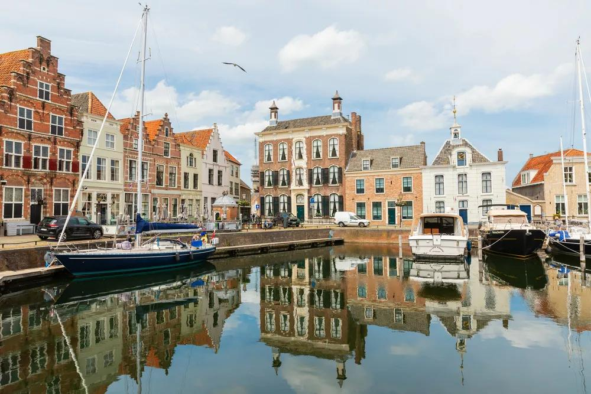

Welcome to my portfolio

My name is Tom Hoekstra and I am currently studying HBO-ICT. Before starting this programme, I completed an MBO programme in IT Expert Systems and Devices.
ICT suits me because I already have experience with technical environments and I enjoy understanding how systems work. At the same time, I am still discovering which direction within ICT suits me best.
What I want to achieve
- Improve my programming skills
- Learn more about different areas within ICT
- Discover which ICT direction suits me best
- Develop my technical and professional skills
You can find more information about my background on my profile page.